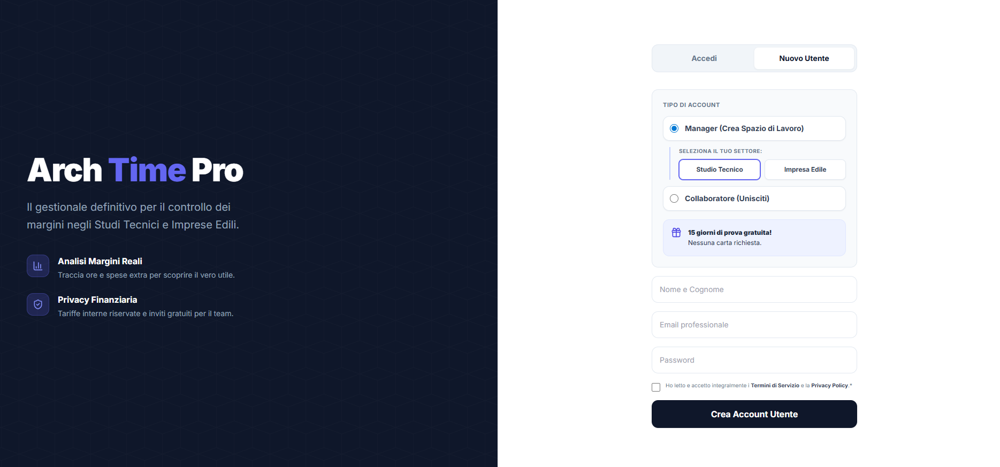
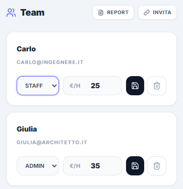
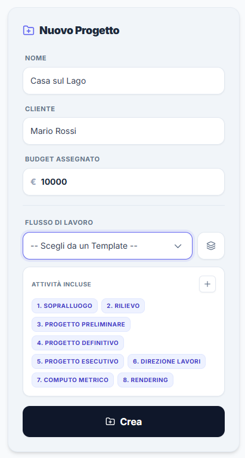
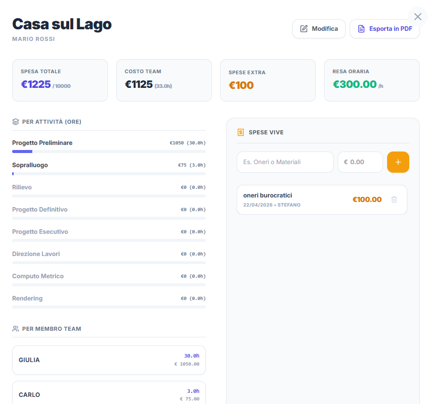
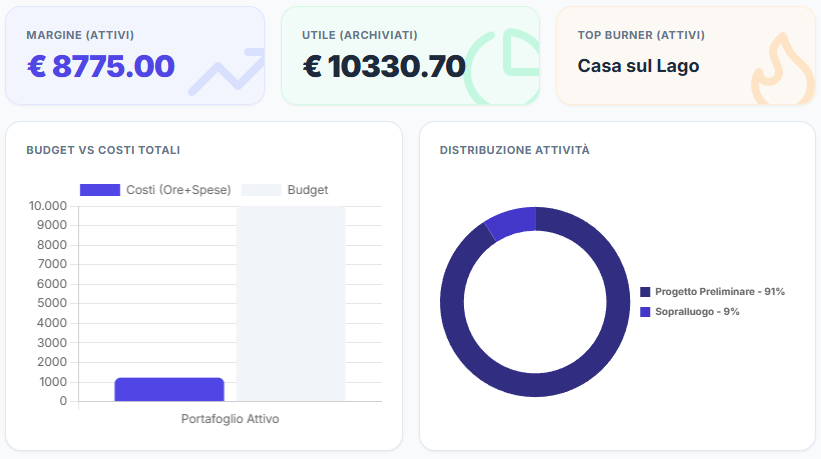

Poche chiacchiere. Non vogliamo venderti l'ennesimo gestionale complicato, vogliamo farti testare sul campo se hai davvero il controllo sui tuoi margini. Registrati gratis e segui questi 5 step spietati.
In fase di registrazione, fai la tua prima scelta: sei uno Studio Tecnico o un'Impresa Edile? Il sistema adatterà istantaneamente i colori, il vocabolario e i template al tuo mondo. Una volta dentro, apri il tuo profilo e personalizza il tuo "Catalogo Attività" (es. Pratica ENEA, Scavi, Render 3D, Posa Pavimenti).
Perché è fondamentale: Impedisci ai collaboratori di usare nomi inventati per le mansioni. I tuoi report finali usciranno sempre perfettamente raggruppati, pronti per essere letti dal cliente senza bisogno di interpretazioni.

Dalla scheda "Gestione", genera il tuo link d'invito e passalo ai tuoi collaboratori, tirocinanti o artigiani esterni. L'iscrizione per loro è sempre gratis. Ora arriva il bello: assegna a ognuno di loro un costo orario aziendale.
Privacy Finanziaria: I membri del team vedranno solo il timer per lavorare. Non avranno MAI accesso a dati sensibili: non conosceranno le proprie tariffe interne, quelle dei colleghi o il budget della commessa. Il controllo resta solo nelle tue mani.

Crea un "Nuovo Progetto" o un "Nuovo Cantiere". Inserisci il Budget concordato col cliente e usa il nostro Task Builder visivo. Puoi richiamare un template intero (es. "Ristrutturazione Standard") o cliccare sulle singole attività per comporre le fasi di lavoro in pochi secondi, senza dover scrivere nulla.
Zero Fogli Excel: L'interfaccia a blocchi ti permette di pianificare il lavoro prima ancora di iniziarlo, in modo che chiunque entri nell'app sappia esattamente su quali fasi deve far scorrere il tempo.

Da questo momento l'operatività è fulminea. Dal computer in studio o dallo smartphone in cantiere, il team preme un solo pulsante per far partire il timer sulle proprie lavorazioni. Nel frattempo, tu puoi inserire rapidamente le Spese Extra (materiali, noleggi, stampe) direttamente dentro la commessa.
Il Quadro Reale: Tracciare solo il tempo è un errore fatale. Solo sottraendo dal budget iniziale sia il costo vivo del team che le spese esterne, otterrai la tua vera Resa Oraria Netta.

Clicca sulla tab "Analisi" o guarda la lista dei tuoi lavori attivi. Le barre di completamento ti dicono subito se stai bruciando l'utile (da azzurro rassicurante a rosso allarme). Esporta un Report PDF della commessa per vedere esattamente quale fase, o quale collaboratore, ha assorbito più risorse del previsto.
Il Verdetto Finale: Allega questi PDF inattaccabili alle tue fatture o ai SAL. Nessun committente ozerà contestare la tua parcella davanti a un registro così preciso. Se i numeri sono rossi, saprai esattamente cosa non fare al prossimo lavoro.

Smettila di fidarti delle tue sensazioni a fine mese. Entra gratis, imposta le tue tariffe e scopri quanto ti costa davvero il tuo lavoro.
Inizia il Test Gratuito